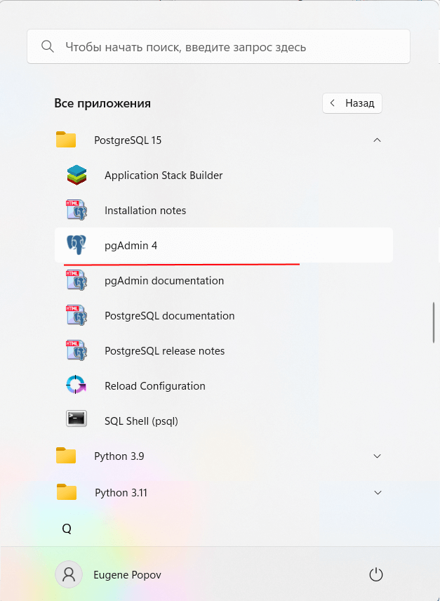
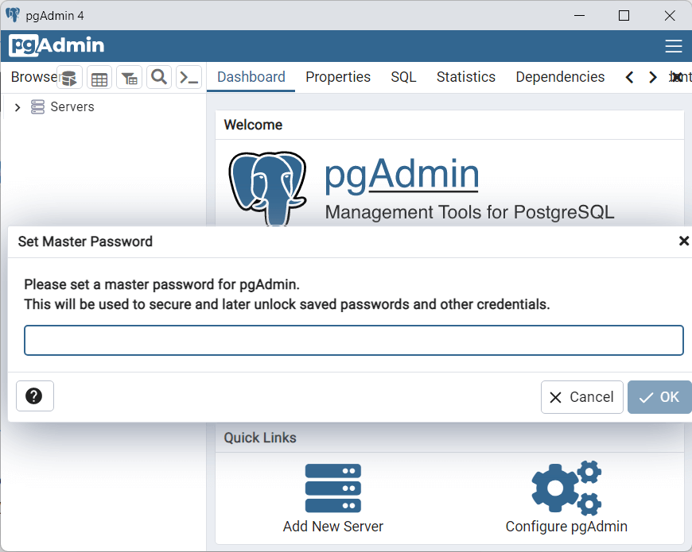
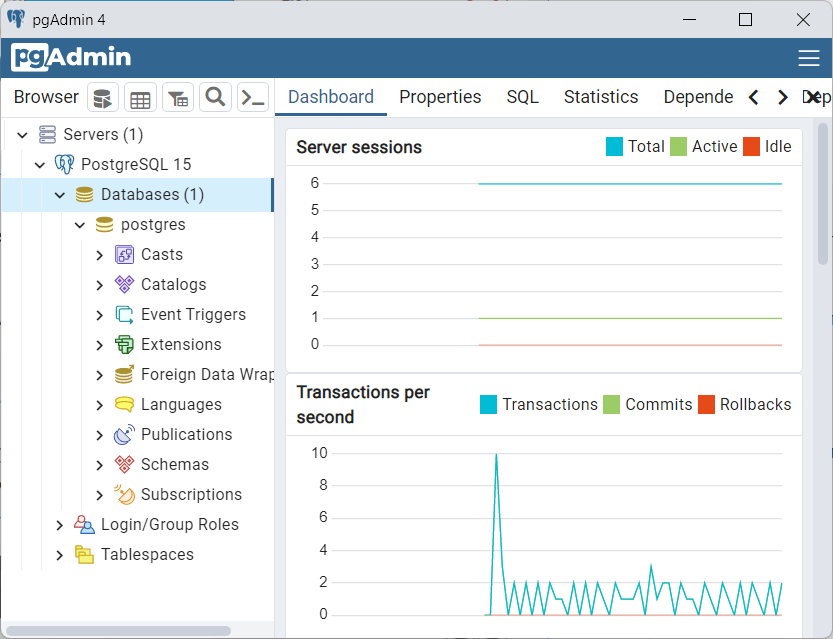
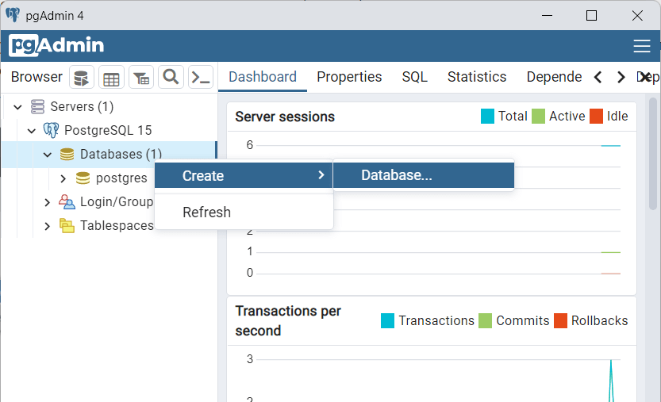
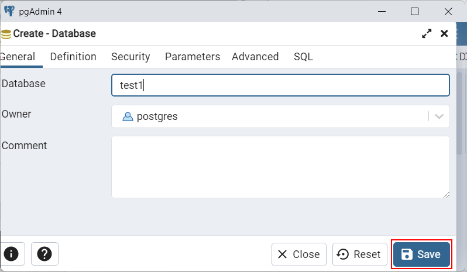
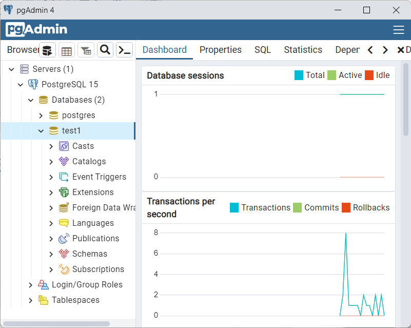

Вернуться на главную страницу →
Вернуться на главную страницу →
Графический клиент pgAdmin
Для упрощения администрирования на сервере postgresql в базовый комплект установки входит такой инструмент как pgAdmin. Он представляет графический клиент для работы с сервером, через который мы в удобном виде можем создавать, удалять, изменять базы данных и управлять ими. Так, на Windows после установки мы можем найти значок pgAdmin в меню Пуск и запустить его:
После этого нам откроется следующая программа pgAdmin. При открытии также отображится окно для ввода пароля для подключения к серверу Postgres:
Здесь необходимо ввести пароль для суперпользователя postgres, который был задан при установке PostgreSQL.
После успешного логина нам откроется содержимое сервера:
В частности, в узле Databases мы можем увидеть все имеющиеся базы данных. По умолчанию здесь есть только одна база данных - postgres.
Также в правой части мы можем увидеть узел Login/Group Roles, который предназначен для управления пользователями и их ролями.
И третий узел - Tablespaces позволяет управлять местом хранения файлов баз данных.
Теперь создадим свою базу данных. Для этого нажмем правой кнопкой мыши на узел Databases. И далее в контекстном меню выберем Create->Database...
Database"/>После этого нам отобразится окно для создания базы данных. Введем название для БД, например, test1 и нажмем на кнопку "Save":
После этого в древовидном меню слева отобразится содержимое созданной базы данных test1:
